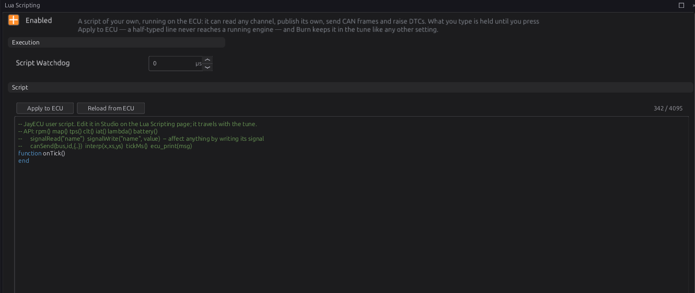

Lua scripting¶
Advanced
In one sentence: a Lua script of your own runs on the ECU, reads any channel, writes channels of its own or over the ECU's, and can send and receive CAN frames and raise trouble codes.
Use a script for logic the settings and expressions (chapter 34) cannot hold: something with memory (a latch, a counter, a timer), a CAN device with its own protocol, or a value worked out in several steps.
What it does¶
Basic
- The script lives in the tune (up to 4095 characters), so it travels with it and is burned like any other setting.
- It runs on its own, lowest-priority task. A slow or broken script can only hold itself up, never the engine.
- It affects the ECU only by writing channels. There is no "add fuel" function: to change what
the ECU does, a script writes the channel the ECU reads (chapter 18 outputs, a correction's input,
one of the eight
lua_gauge_channels an output or table can use).
How it works¶
Intermediate
1 · The script's shape¶
setTickRate(20) -- top level: runs once, when the script loads
function onTick() -- runs over and over, here 20 times a second
end
function onCanRx(bus, id, data) -- optional: a CAN frame you subscribed to arrived
end
- The top level runs once when the script loads. Put setup there:
setTickRate,setWatchDog,canSubscribe, and your own variables. onTick()runs every cycle (about 1000 times a second) unlesssetTickRate(hz)slows it.onCanRxruns for each subscribed CAN frame, beforeonTick.- Variables at the top level keep their values between ticks. They start over when the script is reloaded (below).
The standard Lua math, string and table libraries are there. File access and require are
not.
2 · The functions¶
Reading
| Function | Gives |
|---|---|
signalRead("name") |
a channel's value, or nil when it has none |
rpm(), map(), tps() |
engine speed, MAP, throttle — 0 when there is no reading |
clt(), iat() |
coolant, intake air — 20 when there is no reading |
lambda(), battery() |
lambda — 1.0, battery — 12 when there is no reading |
getCalibration("name") |
a tune setting's value, or nil. The name is the setting's path with _ for .: "rev_limiter_hard_limit_rpm" |
evalTable("name"), evalCurve("name") |
a table or curve read at its own axes, or nil: "generic_tables_table_1" |
interp(x, xs, ys) |
a straight-line lookup in your own lists (up to 32 points) |
tickMs() |
milliseconds since the ECU started |
The short readers never say a sensor is missing
clt() gives 20 with no coolant sensor. For anything that matters, use signalRead("clt") and
check for nil.
Writing
| Function | Does |
|---|---|
signalWrite("name", value) |
sets a channel, overriding the ECU's own value, until something replaces it |
signalWrite("name", value, ms) |
the same, but it lapses after ms milliseconds unless written again |
A script's write outranks everything else that writes the channel — sensors, modules and CAN — for as long as it lasts. Always give a time (a few times your tick period) unless you really mean the value to stay: then, if the script stops, errors or is switched off, the ECU's own value comes back. A write with no time stays until the script writes it again, is switched off or is reloaded. Writing a name the ECU does not have does nothing and prints a message in the ECU console once.
Fuel Cut and Ignition Cut (fuel_cut, ign_cut) are the exception. A script can add a cut
— signalWrite("fuel_cut", 1, 50) cuts fuel for 50 ms — but it cannot take one away: writing 0 there is
ignored, so a script can never switch off the rev limiter or engine protection. Give a cut a time, or
it holds until the script is switched off or reloaded.
CAN
| Function | Does |
|---|---|
canSend(bus, id, {b0, b1, …}) |
sends one frame now: bus 0 = CAN1, 1 = CAN2; up to 8 bytes. An id above 0x7FF is sent as a 29-bit id |
canSubscribe(id [, mask [, bus]]) |
top level: deliver matching frames to onCanRx(bus, id, data). data[1] is the first byte |
Up to 15 received frames wait between ticks; more than that are dropped.
Trouble codes
| Function | Does |
|---|---|
setDtc(code [, severity]) |
raises a code, written as a number: 0x1F01 is P1F01. It stays until clearDtc |
clearDtc(code) |
clears it |
dtcActive(code), dtcCount(), dtcList() |
ask about the codes that are active now |
Codes from a script feed the protection levels like any other (chapter 29). P1Fxx is not used by the ECU itself, so it is a safe block for your own.
Other
| Function | Does |
|---|---|
setTickRate(hz) |
how often onTick runs |
setWatchDog(us) |
this script's time limit per call (overrides Script Watchdog); 0 = none |
ecu_print("text") |
a line in the ECU console (studio: bottom panel, ECU Console) |
3 · When it reloads¶
The script is reloaded — every variable starting over — when you Apply to ECU a change, or change Script Enabled or Script Watchdog, and each time the ECU starts. Editing any other setting does not reload it. On a reload, or when the script is switched off, everything it wrote is withdrawn and the ECU's own values come back.
4 · Errors and the watchdog¶
- A syntax error stops the script from loading at all. Lua Script State
lua_stateis 2 and the editor colours the failing line. - A runtime error (for example arithmetic on
nil) ends that call. The script keeps running on the next tick;lua_stateis 3 andlua_error_countcounts them. - Script Watchdog (0 = off, the default) stops any single call that runs longer than that many microseconds of real time, and reports it as a runtime error. The script shares the processor with the engine, so allow for being interrupted: several times the work you expect.
- Lua Exec Time
lua_exec_usshows how long the lastonTicktook.
Before you start¶
Basic
- Some Lua: variables,
if, functions, tables. The official "Programming in Lua" is a good start. - The channel names you need: the Expression window (chapter 34) and the data logger list them.
Setting it up¶
Intermediate
Open Configuration ▸ Lua Scripting.

- Type the script. Typing changes nothing on the ECU yet; the counter at the top right shows how much of the 4095 characters you have used.
- Apply to ECU sends it; the ECU loads it at once. Reload from ECU throws your edits away and shows what the ECU has.
- Watch
lua_state(0 is running) and the ECU Console for yourecu_printlines and errors. - Burn to keep it.
Worked examples¶
Intermediate
Example 1 — boost in psi on a gauge
setTickRate(20)
function onTick()
local kpa = signalRead("map")
if kpa then signalWrite("lua_gauge_1", (kpa - 101.3) * 0.145, 200) end
end
lua_gauge_1 lapses after 200 ms rather than showing
a wrong number.
Example 2 — a fan with memory
setTickRate(10)
local fanOn = false
function onTick()
local t = signalRead("clt")
if t == nil then fanOn = true -- no coolant reading: run the fan
elseif t > 95 then fanOn = true
elseif t < 90 then fanOn = false end
signalWrite("lua_gauge_2", fanOn and 1 or 0, 500)
end
lua_gauge_2 > 0 drives the fan relay (chapter 18).
Example 3 — reading a CAN device
A device sends frame 0x640 with a pressure in bytes 0–1, big endian, in 0.1 kPa:
canSubscribe(0x640)
function onCanRx(bus, id, data)
if #data >= 2 then
signalWrite("lua_gauge_3", (data[1] * 256 + data[2]) / 10, 500)
end
end
Example 4 — sending engine speed
setTickRate(10)
function onTick()
local r = math.floor(rpm())
canSend(0, 0x700, { r // 256, r % 256 })
end
Example 5 — your own warning
setTickRate(5)
local low = false
function onTick()
local p = signalRead("oil_pressure")
local now = p ~= nil and p < 100 and rpm() > 2000
if now and not low then setDtc(0x1F01, 2) end
if low and not now then clearDtc(0x1F01) end
low = now
end
Tuning it¶
Advanced
- Run
onTickonly as often as the job needs: 10–20 Hz for gauges and switches. - Check
lua_exec_us. If you set a watchdog, set it at several times the highest you see. - Keep state in top-level
localvariables; build large tables once, at the top level, not every tick.
Diagnostics¶
Intermediate
Live channels: lua_state (0 running, 1 off, 2 did not load, 3 runtime error), lua_error_count,
lua_error_line, lua_exec_us, lua_gauge_1 … lua_gauge_8. Errors and ecu_print lines appear in
the ECU Console.
Troubleshooting¶
Basic → Advanced
| Symptom | Likely causes | Check |
|---|---|---|
| Nothing happens | Not applied or not burned; Script Enabled off; no onTick |
lua_state; Apply to ECU |
lua_state 2 |
Syntax error | The coloured line; the ECU Console |
lua_state 3, count climbing |
A runtime error every tick — often arithmetic on a nil read |
The ECU Console; check signalRead for nil |
| "exceeded its exec budget" | Watchdog shorter than the script needs | lua_exec_us; raise it or set 0 |
| A written channel does not change | Name misspelt (the console says so once) | The channel name |
| An override will not go away | Written with no time | Give signalWrite a time, or switch the script off |
| Variables start over | The script was reloaded | Section 3 |
Settings reference¶
| Setting | What it does |
|---|---|
Script Enabledlua.enabledRange: Off or On Default: On |
Run the user script. Off, the script is not executed at all and every signal it would publish simply goes absent — which is the difference between a script that writes 0 and a script that is not there, and the modules downstream treat those as different situations. |
Script Watchdoglua.max_exec_usRange: 0 to 65000 Default: 0 Units: us |
Abort onTick if it exceeds this WALL-CLOCK budget; 0 = off, which is the default. A script cannot reach the engine to hurt it: Lua runs on its own task at the lowest non-idle priority, below the 1 kHz engine frame and every other producer. Measured on the bench, a script spinning for 8 s and never yielding left rpm, sync and trigger error untouched and cost 9% of comms throughput — so there is nothing here for a watchdog to protect, and a tight limit only aborts legitimate work. Set one if you want a stuck script reported rather than merely slow; size it from lua_exec_us, and allow for preemption, since time spent suspended counts. A script can set its own with setWatchDog(us), which overrides this. |
Lua Script Sourcelua.sourceRange: 0 to 255 |
The script itself. It lives in the CONFIG, so it travels with the tune and is written like any other setting rather than being flashed — edit it on the Lua Scripting page rather than here, where the raw tree gives no editor and no syntax feedback. |